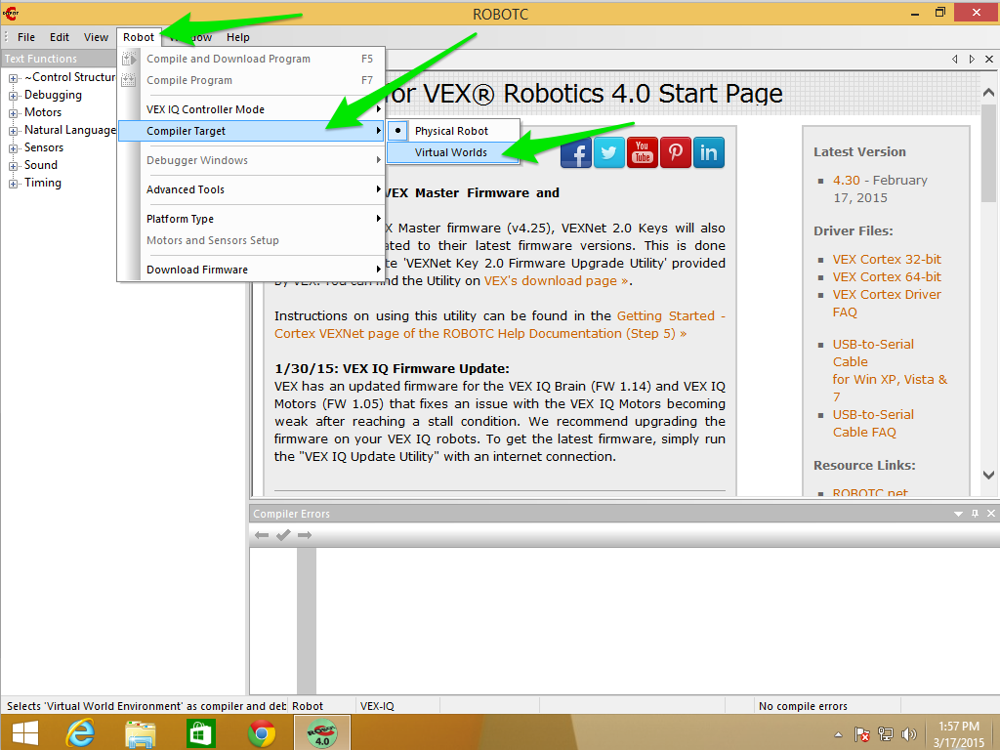
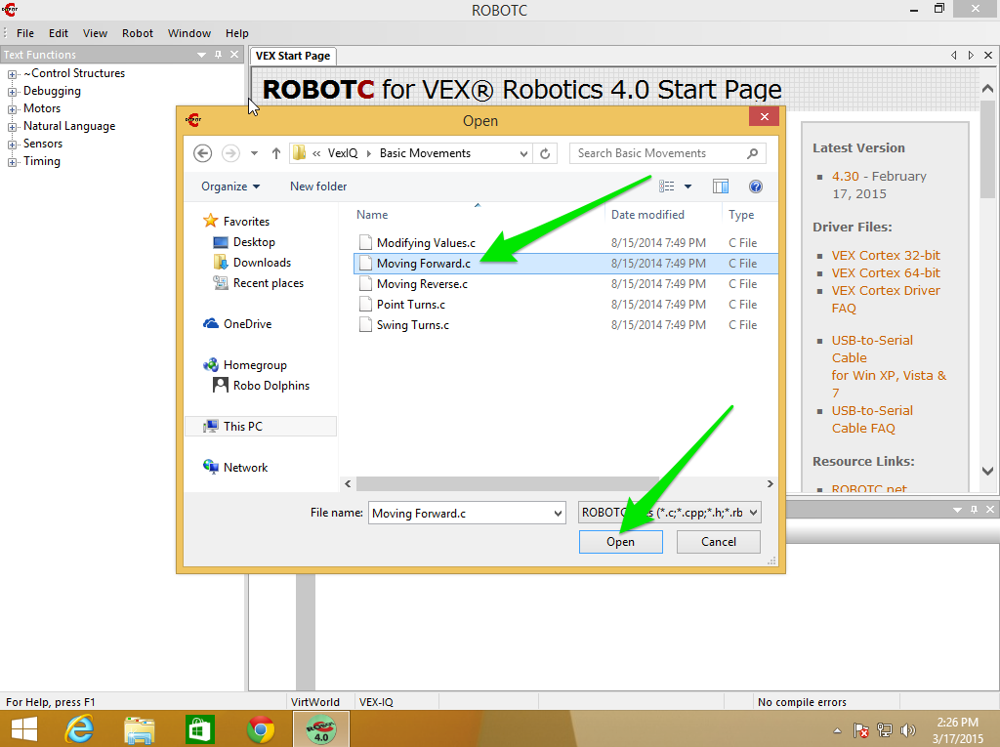
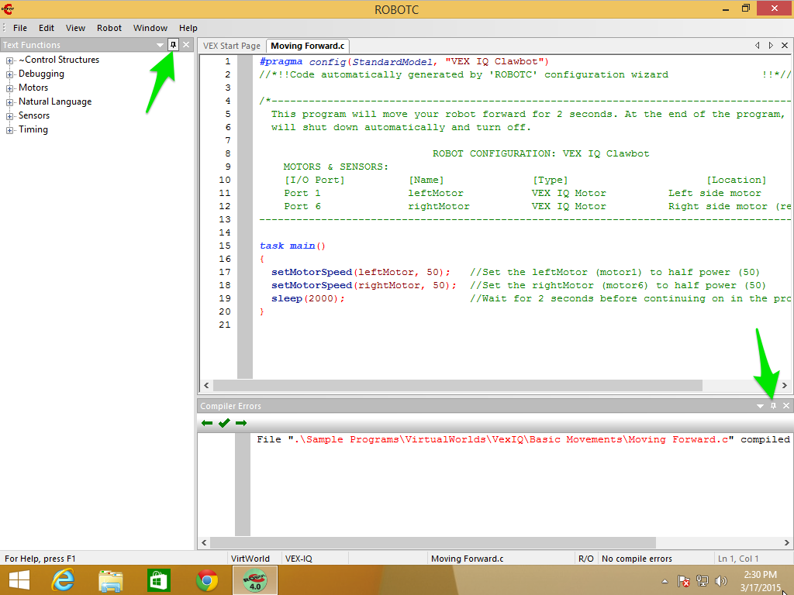
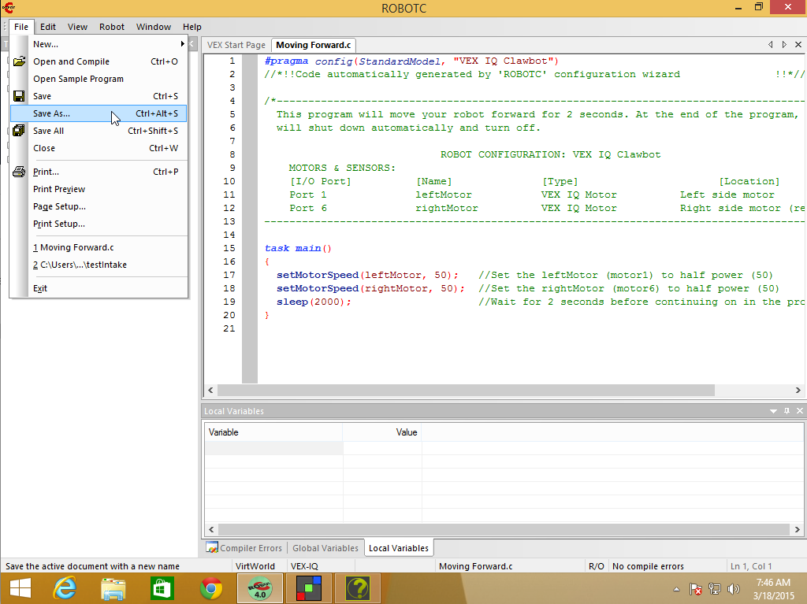
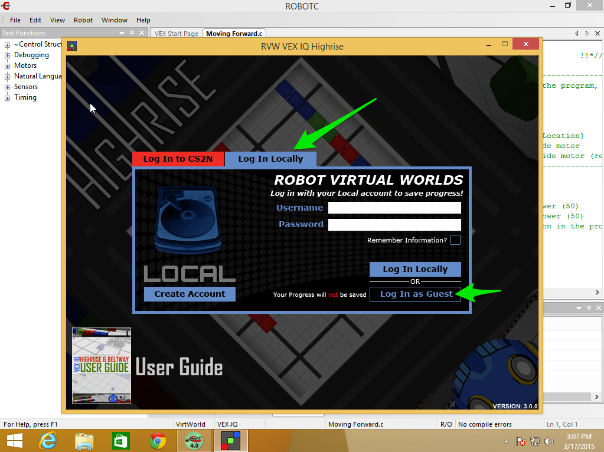
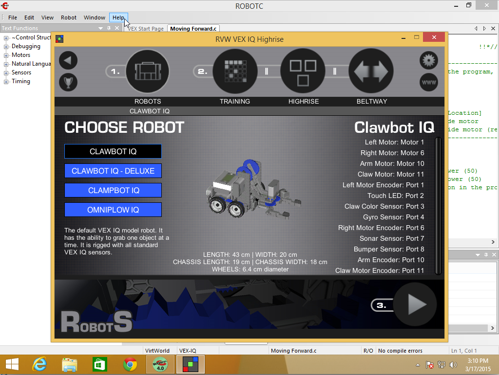

Chapter 1 - Getting Started
Getting Started
We’re going to be doing all of our programming inside the ROBOTC IDE and running are programs on virtual robots inside Robot Virtual Worlds.
There’s a few steps we need to take care of:
- Launch the ROBOTC IDE
- Set the Compiler Target to Robot Virtual Worlds
- Choose the right Virtual World
- Run a sample program to make sure everything works
1. Launching the ROBOTC IDE
To bring up the ROBOTC IDE find and double click on the ROBOTC for VEX Robotics shortcut. Not Graphical and not Robot Virtual Worlds:

2. Setting the Compiler Target
Set the compiler target to Virtual Worlds:
- Click on the Robot menu item
- Then select Compiler Target
- Then select Virtual Worlds

You’ll know you have that correct when the dot is next to Virtual Worlds.
3. Choose the Virtual World
Now that we’ve set the Compiler Target to Robot Virtual Worlds we can chooose the correct World for our purposes:
- Click on the Window menu item
- Then Select Virtual World to Use
- Then VEX Highrise!

Note: If you don’t see Select Virtual Worlds to Use or Open RVW Level Builder Utility under the Window menu item then you probably haven’t chosen Virtual Worlds as the compiler target, go back to Step 2.
4. Run a sample program
Next we’re going to run a sample program to make sure we have everything set up correctly.
First, go to the File menu and select Open Sample Program

Next, inside the File Open Dialog double click on Basic Movements

Then open the program Moving Forward.c. You can do this two ways:
- Double click on the file Moving Forward.c
- Single click on the file Moving Forward.c and then clicking Open

At this point you should see Moving Forward.c in the main code window in the ROBOTC IDE. So we should be able to Compile, Download and Run the program.

Hint: the two “thumb tacks” I’m pointing to in the screenshot will “un-pin” the panels and let them autohide to give you more space in the editor.
At this point we need to save our program somewhere else so ROBOTC doesn’t complain we’re trying to overwrite the sample program. From the File Menu select Save As… and choose a place to save the file. For students, this would be in your student directory under your Teacher’s directory (or folder).

Now we can compile. Like many things, there are at least two ways you can compile and download the program to the virtual robot:
- Hitting the function key F5
- Choosing the Robot menu item, then choosing Compile and Download Program

Hint: If you look at the highlighted menu item, on the right you’ll see F5, that’s the Keyboard Shortcut for Compile and Download Program.
After the program compiles it will bring up the Robot Virtual Worlds login window. We want to log in locally as a Guest (for now):
- Click on the blue Log in Locally tab
- Click on Log In as Guest button

From the Home Screen we need to verify a two things:
- That Clawbot IQ is the selected robot

- That the Training Table is Basic Movement 1 (do this by clicking the Training Circle, also labeled #2)

Now we should be ready to go. Press the Play Button (labeled #3) and you should see a VEX IQ Field with 3 green cubes and a Clawbot robot.

Change the view to Camera 2 and Hit Play. Your robot should move forward.